TP4 - Microservices avec Spring Boot et Spring Cloud¶

Télécharger PDF¶

Objectifs du TP¶
- Création de microservices avec Spring Boot et Spring Cloud
- Déploiement d'un microservices sur plusieurs instances
Acknowledgement¶
Ce TP a été largement inspiré du travail d'un binôme d'étudiants en Génie Logiciel à l'INSAT, promotion 2017 (Houssem Ben Braiek et Hadhemi Jabnoun), que je tiens à féliciter et remercier.
Outils et Versions¶
- Spring Boot Version: 1.5.8
- Spring Cloud Version 1.2.4
- Java Version 1.8.0_121
- Maven Version 3.5.2
- IntelliJ IDEA Version Ultimate 2016.1 (ou tout autre IDE de votre choix)
Architecture Microservices¶
Présentation¶
Une architecture Microservices représente un moyen de concevoir les applications comme ensemble de services indépendamment déployables. Ces services doivent de préférence être organisés autours des compétences métier, de déploiement automatique, d'extrémités intelligentes et de contrôle décentralisé des technologies et des données.
Architecture Proposée¶
L'objectif de ce travail est de montrer comment créer plusieurs services indépendamment déployables qui communiquent entre eux, en utilisant les facilités offertes par Spring Cloud et Spring Boot. Spring Cloud fournit des outils pour les développeurs pour construire rapidement et facilement des patrons communs de systèmes répartis (tel que des services de configuration, de découverte ou de routage intelligent). Spring Boot permet de son côté de construire des applications Spring rapidement aussi rapidement que possible, en minimisant au maximum le temps de configuration, d'habitude pénible, des applications Spring.
Nous allons donc créer les microservices suivants:
- Product Service : Service principal, qui offre une API REST pour lister une liste de produits.
- Config Service : Service de configuration, dont le rôle est de centraliser les fichiers de configuration des différents microservices dans un endroit unique.
- Proxy Service : Passerelle se chargeant du routage d'une requête vers l'une des instances d'un service, de manière à gérer automatiquement la distribution de charge.
- Discovery Service: Service permettant l'enregistrement des instances de services en vue d'être découvertes par d'autres services.
L'architecture résultante aura l'allure suivante:

Création des Microservices¶
Microservice ProductService¶
Nous commençons par créer le service principal: Product Service.
Chaque microservice sera sous forme d'un projet Spring. Pour créer rapidement et facilement un projet Spring avec toutes les dépendances nécessaires, Spring Boot fournit Spring Initializr.
Pour cela, aller au site start.spring.io, et créer un projet avec les caractéristiques suivantes:
- Projet Maven avec Java et Spring Boot version 1.5.8
- Group: tn.insat.tpmicro
- Artifact: product-service
- Dépendances:
- Web
- Rest Repositories
- JPA : Java Persistence API
- H2 : base de données pour le stockage
- Actuator : pour le montoring et la gestion de l'application
- Eureka Discovery : pour l'intégration avec le Discovery Service
- Config Client : pour l'intégration avec le Config Service
Suivre ensuite les étapes suivantes pour créer le microservice ProductService:
- Ouvrir le projet téléchargé avec IntelliJ IDEA.
- Sous le répertoire src/main/java et dans le package tn.insat.tpmicro.productservice, créer la classe Product suivante:
package tn.insat.tpmicro.productservice; import javax.persistence.Entity; import javax.persistence.GeneratedValue; import javax.persistence.Id; import java.io.Serializable; @Entity public class Product implements Serializable { @Id @GeneratedValue private int id; private String name; public Product(){ } public Product(String name) { this.name = name; } public int getId() { return id; } public void setId(int id) { this.id = id; } public String getName() { return name; } public void setName(String name) { this.name = name; } }
Cette classe est annotée avec JPA, pour stocker ensuite les objets Product dans la base de données H2 grâce à Spring Data. Pour cela, créer l'interface ProductRepository dans le même package:
package tn.insat.tpmicro.productservice; import org.springframework.data.jpa.repository.JpaRepository; public interface ProductRepository extends JpaRepository<Product , Integer> { }
Pour insérer les objets dans la base, nous utiliserons l'objet Stream. Pour cela, nous allons créer la classe DummyDataCLR :
package tn.insat.tpmicro.productservice; import org.springframework.beans.factory.annotation.Autowired; import org.springframework.boot.CommandLineRunner; import org.springframework.stereotype.Component; import java.util.stream.Stream; @Component class DummyDataCLR implements CommandLineRunner { @Override public void run(String... strings) throws Exception { Stream.of("Pencil", "Book", "Eraser").forEach(s->productRepository.save(new Product(s))); productRepository.findAll().forEach(s->System.out.println(s.getName())); } @Autowired private ProductRepository productRepository; }
Nous remarquons ici que le productRepository sera instancié automatiquement grâce au mécanisme d'injection de dépendances, utilisé par Spring.
Lancer la classe principale. Une base de données H2 sera créée et le CommandLineRunner se chargera de lui injecter les données.
Attention
Prenez soin d'utiliser JDK 8!
Pour exécuter votre application:
- Créer une configuration mvn package en faisant Run->Edit Configurations puis en créant une nouvelle configuration de type Maven avec la commande package comme suit:
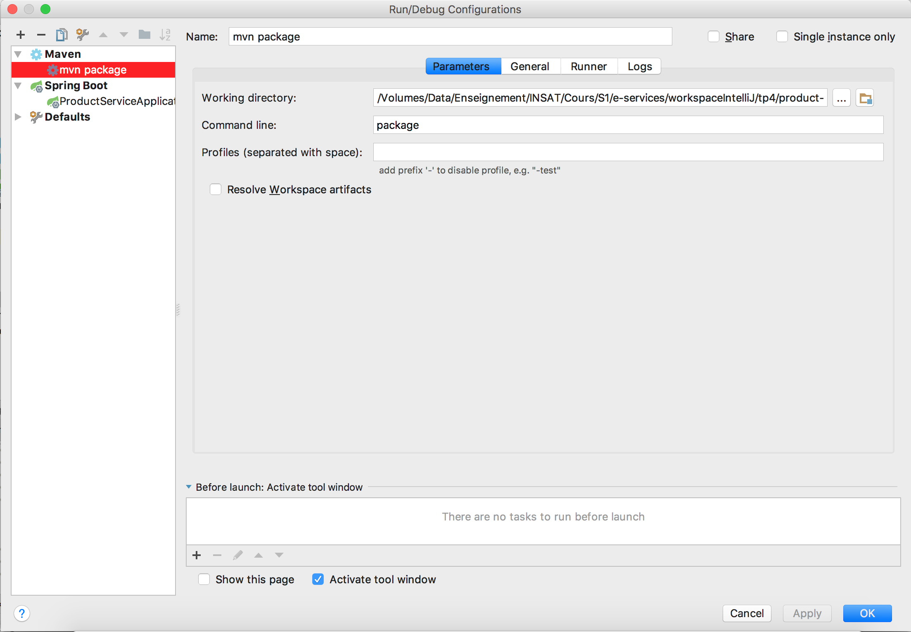
Un répertoire target sera créé, contenant les classes générées.
- Lancer ensuite la configuration Spring Boot ProductServiceApplication créée par défaut par IntelliJ. Le résultat sur la console devrait ressembler à ce qui suit:
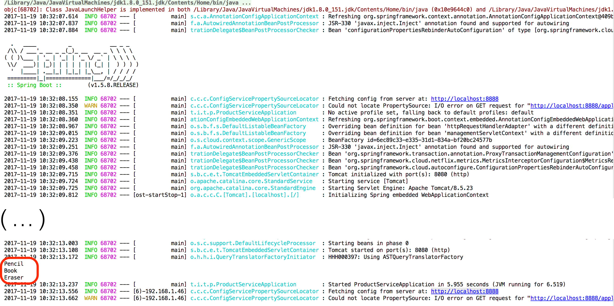
Tip
Pour éviter de lancer à chaque fois les deux configurations, ajouter dans la deuxième configuration une dépendance vers la première, rajouter cette dernière dans la case Before Launch: Build, Maven Goal, Activate Tool Window, comme suit:
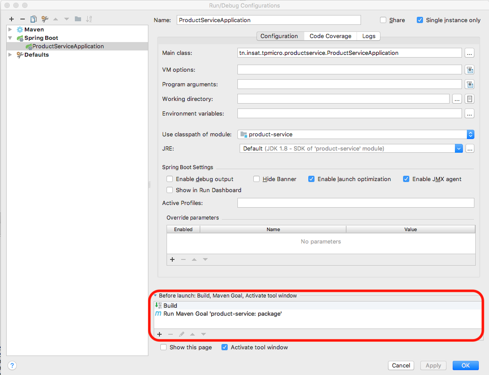
Pour tester votre application, ouvrir la page http://localhost:8080 sur le navigateur. Vous obtiendrez (si tout se passe bien) le résultat suivant:
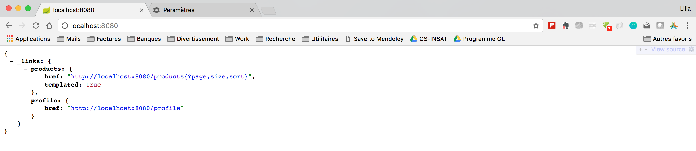
Vous remarquerez que le service REST créé respecte automatiquement la norme HATEOAS, qui offre dans les services REST, les liens pour naviguer dynamiquement entre les interfaces.
Si vous naviguez vers la page http://localhost:8080/products, vous verrez la liste des produits, injectés par le CLR, comme suit:
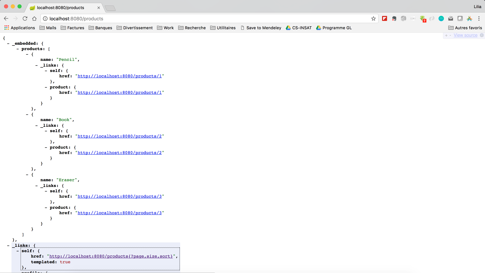
Pour voir les informations relatives à un seul produit, il suffit de connaître son ID: http://localhost:8080/products/1, par exemple.
Pour rajouter une fonctionnalité de recherche par nom, par exemple, modifier l'interface ProductRepository, comme suit:
package tn.insat.tpmicro.productservice; import org.springframework.data.domain.Page; import org.springframework.data.domain.Pageable; import org.springframework.data.jpa.repository.JpaRepository; import org.springframework.data.jpa.repository.Query; import org.springframework.data.repository.query.Param; import org.springframework.data.rest.core.annotation.RepositoryRestResource; @RepositoryRestResource public interface ProductRepository extends JpaRepository<Product , Integer> { @Query("select p from Product p where p.name like :name") public Page<Product> productByName(@Param("name") String mc , Pageable pageable); }
Pour tester cette fonctionnalité de recherche, aller au lien http://localhost:8080/products/search/productByName?name=Eraser
Le résultat obtenu sera le suivant:
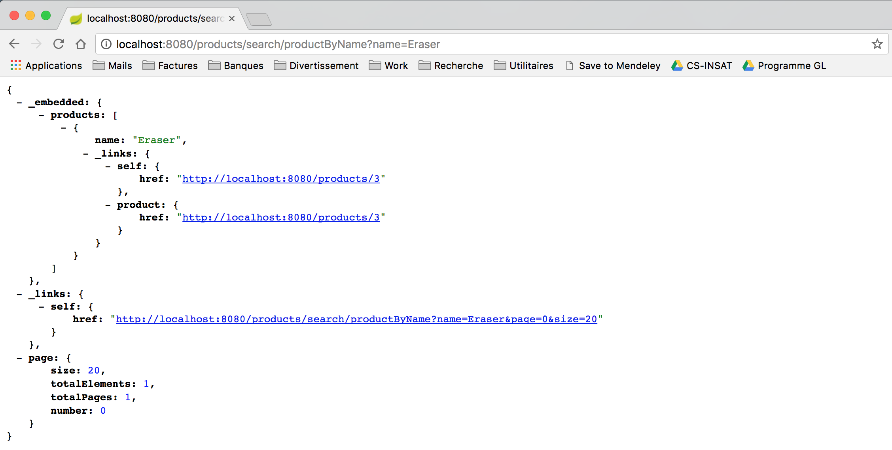
La dépendance Actuator qui a été rajoutée au projet permet d'afficher des informations sur votre API REST sans avoir à implémenter explicitement la fonctionnalité. Par exemple, si vous allez vers http://localhost:8080/metrics, vous pourrez avoir plusieurs informations sur le microservice, tel que le nombre de threads, la capacité mémoire, la classe chargée en mémoire, etc. Mais d'abord, rajouter les deux lignes suivantes au fichier src/main/resources/application.properties pour (1) afficher des informations plus détaillées sur l'état du service et (2) désactiver les contraintes de sécurité par défaut:
endpoints.health.sensitive = false management.security.enabled = false
Relancer le projet. Le résultat obtenu en exécutant http://localhost:8080/metrics sera comme suit:
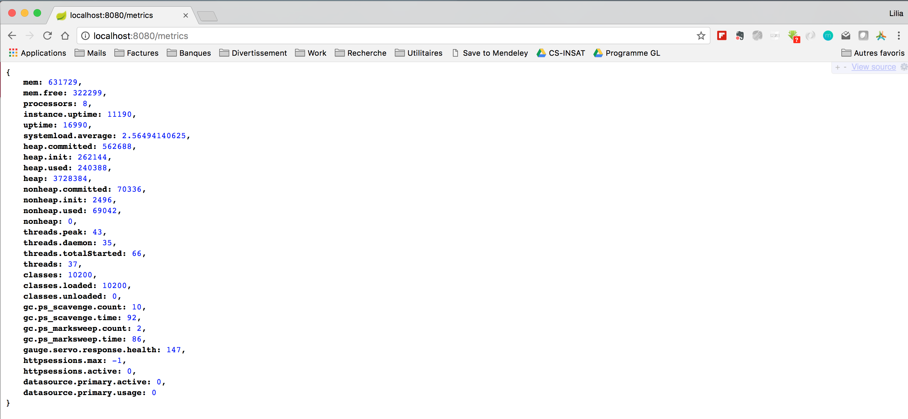
Les informations sur l'état du service sont affichées grâce à http://localhost:8080/health
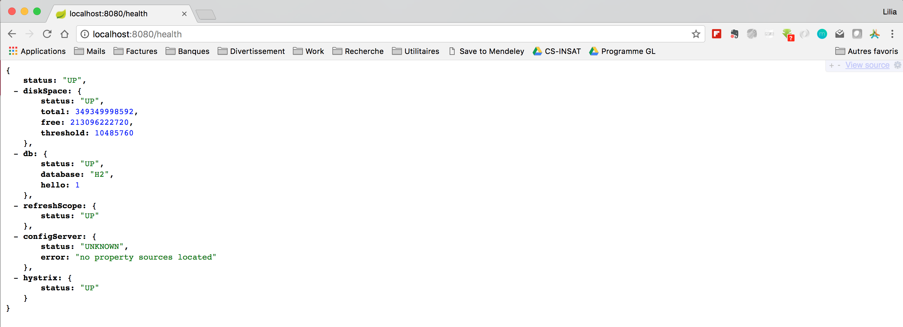
Plusieurs Instances du Microservice ProductService¶
Nous allons maintenant créer d'autres instances du même service et les déployer sur des ports différents.
Pour lancer plusieurs instances du service ProductService, nous allons définir plusieurs configurations avec des numéros de port différents. Pour cela:
- Aller à Run->Edit Configurations, et copier la configuration ProductServiceApplication en la sélectionnant dans la barre latérale, et en cliquant sur l'icône . Une nouvelle configuration sera créée.
- Changer son nom: ProductServiceApplication:8081
- Ajouter dans la case Program Arguments l'argument suivant:
--server.port=8081
- Lancer la configuration. Un nouveau service sera disponible à l'adresse: http://localhost:8081
Tip
En exécutant la seconde configuration, un popup s'affiche dans IntelliJ, qui vous demande si vous voulez afficher le dashboard pour visualiser plusieurs instances Spring Boot, comme suit:
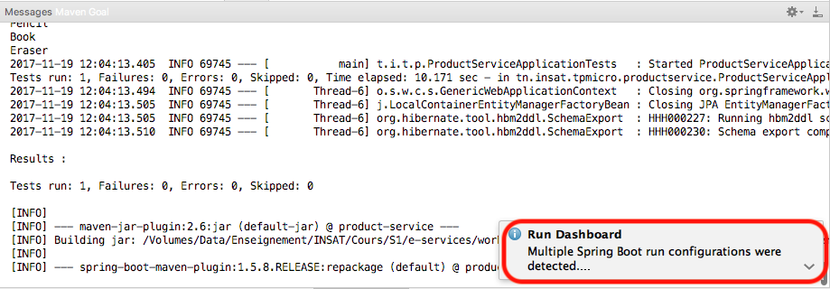
Cliquer dessus, et choisir : Show Run Configurations in Dashboard. La vue suivante s'affiche, en bas de votre écran:
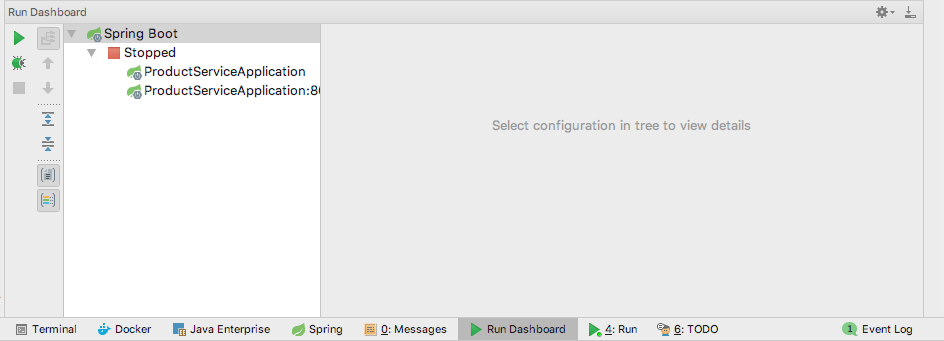
Vous pouvez désormais gérer vos instances dans cette fenêtre.
- Refaire les mêmes étapes pour créer une instance du service tourant sur le port 8082.
Microservice ConfigService¶
Dans une architecture microservices, plusieurs services s'exécutent en même temps, sur des processus différents, avec chacun sa propre configuration et ses propres paramètres. Spring Cloud Config fournit un support côté serveur et côté client pour externaliser les configurations dans un système distribué. Grâce au service de configuration, il est possible d'avoir un endroit centralisé pour gérer les propriétés de chacun de ces services.
Pour cela:
- Commencer par créer un service ConfigService dans Spring Initializr, avec les dépendances appropriées, comme indiqué sur la figure suivante:
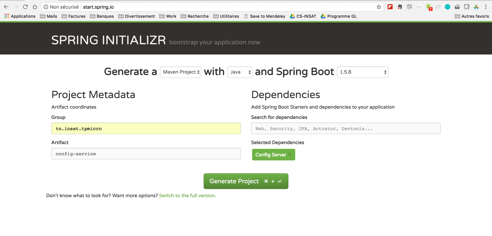
- Ouvrir le projet dans une autre instance d'IntelliJ IDEA.
- Pour exposer un service de configuration, utiliser l'annotation @EnableConfigServer pour la classe ConfigServiceApplication, comme suit:
package tn.insat.tpmicro.configservice; import org.springframework.boot.SpringApplication; import org.springframework.boot.autoconfigure.SpringBootApplication; import org.springframework.cloud.config.server.EnableConfigServer; @EnableConfigServer @SpringBootApplication public class ConfigServiceApplication { public static void main(String[] args) { SpringApplication.run(ConfigServiceApplication.class, args); } }
- Pour paramétrer ce service de configuration, ajouter dans son fichier application.properties les valeurs suivantes:
server.port=8888 spring.cloud.config.server.git.uri=file:./src/main/resources/myConfig
Ceci indique que le service de configuration sera lancé sur le port 8888 et que le répertoire contenant les fichiers de configuration se trouve dans le répertoire src/main/resources/myConfig. Il suffit maintenant de créer ce répertoire.
Tip
Pour pouvoir référencer un répertoire avec son chemin absolu, utiliser plutôt file:///<chemin_absolu>.
- Créer le répertoire myConfig à l'arborescence src/main/resources
- Créer dans ce répertoire le fichier application.properties dans lequel vous insérez l'instruction suivante:
global=xxxxx
Ce fichier sera partagé entre tous les microservices utilisant ce service de configuration.
- Le répertoire de configuration doit être un répertoire git. Pour cela:
- Ouvrir le terminal avec IntelliJ et naviguer vers ce répertoire.
- Initialiser votre répertoire:
git init - Créer une entrée racine dans le repository:
git add . - Faire un commit:
git commit -m "add ."
Revenir vers le projet ProductService et ajouter dans le fichier de configuration application.properties:
spring.application.name = product-service spring.cloud.config.uri = http://localhost:8888
Redémarrer vos services. Pour consulter le service de configuration, aller à http://localhost:8888/product-service/master.
Vous verrez le fichier JSON suivant:
{ name: "product-service", profiles: [ "master" ], label: null, version: "6e1ea61d706133e2d8b62f40c6b784192fb58e8a", state: null, propertySources: [ { name: "file:./src/main/resources/myConfig/application.properties", source: { global: "xxxxx" } } ] }
Comme le fichier application.properties contient toutes les propriétés partagées des différents microservices, nous aurons besoins d'autres fichiers pour les propriétés spécifiques à un microservice. Pour cela:
- Créer dans le répertoire myConfig un fichier product-service.properties pour le service ProductService.
Attention
Le nom du fichier doit correspondre à la propriété spring.application.name que vous avez saisi dans le fichier application.properties de votre microservices!
- Ajouter les propriétés de votre service, à savoir, par exemple:
me=lilia.sfaxi@insat.rnu.tn
Relancer le microservice de configuration. En consultant l'url http://localhost:8888/product-service/master, nous remarquons l'ajout de la nouvelle propriété.
{ name: "product-service", profiles: [ "master" ], label: null, version: "6e1ea61d706133e2d8b62f40c6b784192fb58e8a", state: null, propertySources: [ { name: "file:./src/main/resources/myConfig/product-service.properties", source: { me: "lilia.sfaxi@insat.rnu.tn" } }, { name: "file:./src/main/resources/myConfig/application.properties", source: { global: "xxxxx" } } ] }
Nous allons maintenant définir un appel REST à cette propriété. Pour cela:
- Créer la classe ProductRestService dans le projet product-service. Son code ressemblera à ce qui suit:
package tn.insat.tpmicro.productservice; import org.springframework.beans.factory.annotation.Value; import org.springframework.web.bind.annotation.RequestMapping; import org.springframework.web.bind.annotation.RestController; @RestController public class ProductRestService { @Value("${me}") private String me; @RequestMapping("/messages") public String tellMe(){ System.out.println("c'est moi qui ait répondu!"); return me; } }
- Redémarrer les trois instances du service, puis appeler dans votre navigateur le service en tapant: http://localhost:8080/messages. Vous verrez le résultat suivant sur le navigateur:
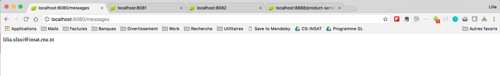
- Consulter votre Spring Dashboard, vous verrez le message suivant dans la console de l'instance du service lancée sur le port 8080:
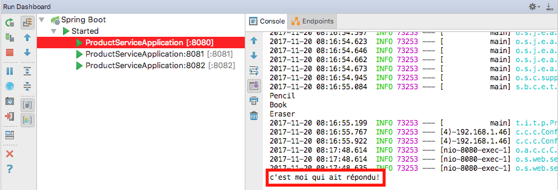
Microservice DiscoveryService¶
Pour éviter un couplage fort entre microservices, il est fortement recommandé d'utiliser un service de découverte qui permet d'enregistrer les propriétés des différents services et d'éviter ainsi d'avoir à appeler un service directement. Au lieu de cela, le service de découverte fournira dynamiquement les informations nécessaires, ce qui permet d'assurer l'élasticité et la dynamicité propres à une architecture microservices.
Pour réaliser cela, Netflix offre le service Eureka Service Registration and Discovery, que nous allons utiliser dans notre application.
- Revenir à Spring Initializr et créer un nouveau projet Spring Boot intitulé discovery-service avec les dépendances Eureka Server et Config Client.
- Lancer le projet avec IntelliJ.
- Dans la classe DiscoveryServiceApplication, ajouter l'annotation EnableEurekaServer.
package tn.insat.tpmicro.discoveryservice; import org.springframework.boot.SpringApplication; import org.springframework.boot.autoconfigure.SpringBootApplication; import org.springframework.cloud.netflix.eureka.server.EnableEurekaServer; @EnableEurekaServer @SpringBootApplication public class DiscoveryServiceApplication { public static void main(String[] args) { SpringApplication.run(DiscoveryServiceApplication.class, args); } }
- Ajouter les propriétés suivantes dans son fichier application.properties.
spring.application.name=discovery-service spring.cloud.config.uri=http://localhost:8888
- Dans le projet config-service, créer un fichier discovery-service.properties sous le répertoire myConfig.
- Ajouter les propriétés suivantes pour (1) définir le port par défaut du service de découverte et (2) empêcher un auto-enregistrement du service Eureka.
server.port = 8761 eureka.client.fetch-registry = false eureka.client.register-with-eureka = false
Pour consulter le service Eureka, aller à http://localhost:8761, l'interface suivante s'affiche:
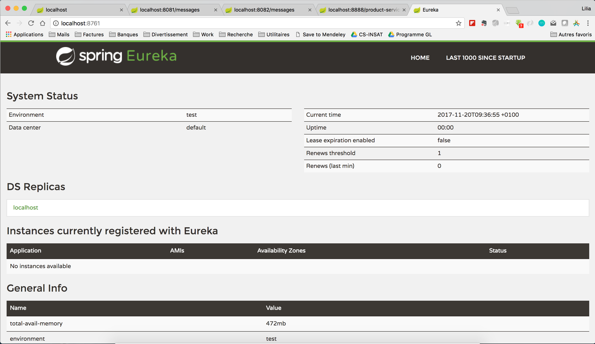
Nous remarquons qu'aucune instance n'est inscrite dans le serveur de découverte. Nous allons donc modifier le code de la classe ProductServiceApplication pour que le microservice ProductService s'enregistre:
package tn.insat.tpmicro.productservice; import org.springframework.boot.SpringApplication; import org.springframework.boot.autoconfigure.SpringBootApplication; import org.springframework.cloud.client.discovery.EnableDiscoveryClient; @EnableDiscoveryClient @SpringBootApplication public class ProductServiceApplication { public static void main(String[] args) { SpringApplication.run(ProductServiceApplication.class, args); } }
Redémarrer les trois instances de services ProductService et actualiser la fenêtre de Eureka, vous verrez qu'un seul service est déclaré, avec trois adresses différentes.
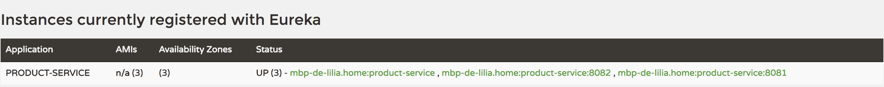
Microservice ProxyService¶
L'architecture microservice, en fournissant un ensemble de services indépendants et faiblement couplés, se trouve confrontée au challenge de fournir une interface unifiée pour les consommateurs, de manière à ce qu'ils ne voient pas la décomposition à faible granularité de vos services. C'est pour cela que l'utilisation d'un service proxy, responsable du routage des requêtes et de la répartition de charge, est important.
Netflix offre le service Zuul pour réaliser cela. Pour créer votre microservice Proxy:
- Aller à Spring Initializr.
- Créer le projet proxy-service avec les dépendances suivantes: Zuul, Web, HATEOAS, Actuator, Config Client et Eureka Discovery.
- Ouvrir le service avec IntelliJ IDEA.
- Ajouter à la classe ProxyServiceApplication l'annotation @EnableZuulProxy, ainsi que @EnableDiscoveryClient pour que le proxy soit également enregistré dans le service ce découverte.
- Ajouter les propriétés spring.application.name et spring.cloud.config.uri dans le fichier application.properties du service proxy.
- Créer le fichier proxy-service.properties dans le répertoire myConfig du service de configuration, dans lequel vous allez fixer le port du service proxy à 9999.
En lançant le service Proxy, vous remarquerez qu'il est rajouté dans Eureka.
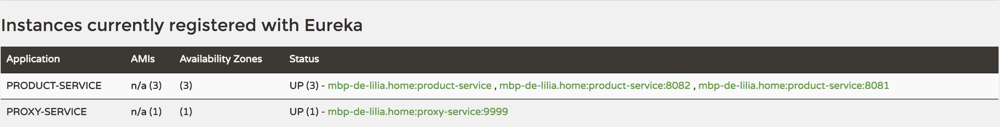
Si vous exécutez la requête http://localhost:9999/product-service/messages plusieurs fois, vous remarquerez que l'affichage c'est moi qui ait répondu! s'affichera sur les consoles des trois instances respectivement, à tour de rôle.
Homework¶
Le concept de microservices est très fortement lié à la culture DevOps, et à la conteneurisation. Grâce aux conteneurs, vous n’avez pas besoin de développer et de configurer entièrement un nouveau serveur physique, ni de mettre sur pied un nouvel environnement virtuel, ce qui requiert une émulation de processeur, un système d’exploitation et des logiciels installés. Le conteneur vous permet de faire tenir un environnement complet dans une seule image légère.
C'est pour cela que votre tâche pour la séance prochaine sera de dockeriser les différents microservices que nous venons de créer, au lieu de les lancer sur notre machine physique (localhost). Les trois instances du service ProductService, ainsi que les trois autres services (Discovery, Config et Proxy) doivent tourner indépendamment, chacun dans soon propre contenaire.
Vous devez fournir chacun un lien vers un projet Github contenant vos projets, ainsi qu'un Readme en bonne et due forme (respecter la norme Markdown svp) montrant les étapes de conteneurisation des services. Chaque binôme devra fournir son lien dans le fichier excel intitulé Homework que vous trouverez dans Piazza.